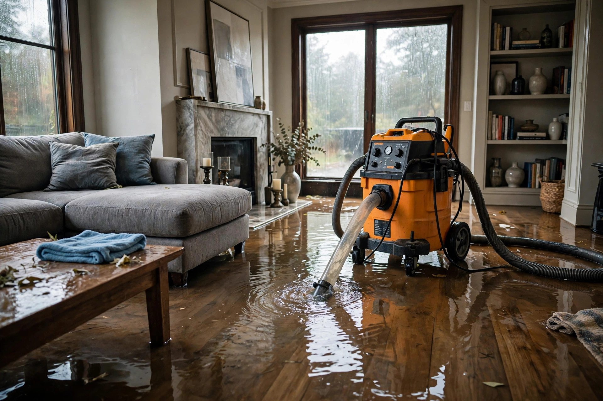

Emergency Water Extraction in Eagle, ID
A burst supply line, a failed water heater, a sump pump that quit overnight — every hour standing water sits, it wicks higher into drywall. We pull it out fast.
The first hours decide the damage
Water damage is a race against absorption. Here's what happens on the clock after water hits your floors.
Surface water, salvageable everything
Water sits on floors and soaks carpet pads. Fast extraction now means most materials dry in place.
Wicking and swelling begin
Drywall wicks water upward, wood floors cup, and mold can start within 48 hours per EPA guidance.
Secondary damage sets in
Musty odors develop. Subfloors stay damp under seemingly dry surfaces. What was a water job becomes a water-plus-mold job — roughly doubling the scope.
Structural and health concerns
Prolonged saturation weakens drywall, rots trim, and lets mold establish inside wall cavities. At this point, significant material removal is unavoidable.
Extraction, then drying, then verification
Stop the source
We help you find the shutoff — main valve, fixture valve, water heater — and confirm the flow has actually stopped before anything else.
Extract standing water
Truck-mounted or portable extractors pull water from floors, carpets, and hard surfaces. Weighted extraction tools squeeze carpet pads dry.
Set drying equipment
Air movers and dehumidifiers create the airflow and low humidity that pull bound moisture from drywall, wood, and concrete.
Verify with meters
We don't pull equipment on a schedule — we pull it when moisture readings hit dry standards for each material. Numbers, not guesses.
An Eagle homeowner returns from a weekend trip to find the laundry room supply hose burst — water across the tile, into the hallway carpet, and wicking up the drywall. Because they call within hours, extraction starts the same evening. The tile dries in place, the carpet pad gets replaced, and only the bottom six inches of drywall needs cutting. A day later, the same job would have meant full wall sections.
What to do before help arrives
- Shut off the water at the source — the fixture valve, or the main if you can't find it.
- Cut power to affected rooms at the breaker if water is near outlets or appliances.
- Move valuables, rugs, and furniture to dry ground. Lift curtains and upholstery off wet floors.
- Don't use a household vacuum on standing water — it's dangerous and ineffective.
- Take photos of everything for insurance before moving anything.
Sources: EPA — Mold, Moisture & Your Home IICRC
Straight answers
How fast can you get to my Eagle home?
We run a 24/7 emergency line — call (321) 985-3339 any time. Response depends on current workload and your location in Eagle, but water emergencies jump the queue. The call itself costs nothing and we'll talk you through immediate steps while help is on the way.
Will my insurance cover emergency water extraction?
Sudden events like burst pipes and appliance failures are typically covered under most homeowner policies. Gradual leaks usually aren't. Document everything with photos and keep all receipts — that paper trail is what adjusters need.
Can you save my hardwood floors?
Sometimes. If extraction starts within the first day and the water was clean, professional drying can save solid hardwood. Cupping may flatten as moisture leaves. Floors that sat wet for days, or engineered flooring with swollen cores, usually need replacement.
What's the difference between extraction and drying?
Extraction removes liquid water you can see and pump — it's fast. Drying removes the moisture absorbed into drywall, wood, and concrete — it takes days of controlled airflow and dehumidification. Skipping the drying phase is why so many 'cleaned up' water jobs grow mold a month later.
Do I need to leave my house during extraction?
Rarely. Extraction is noisy but quick — usually a few hours. The drying equipment runs for days but it's just fans and dehumidifiers. You can live around it, though light sleepers sometimes prefer the guest room away from the air movers.
Water coming in right now?
Don't wait. Call immediately — we'll talk you through shutting it off while help heads your way.